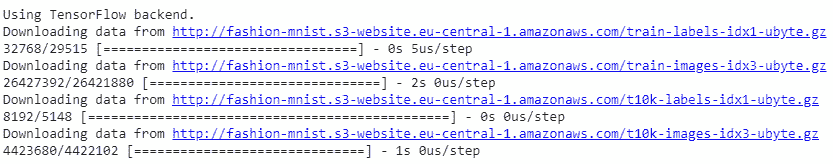
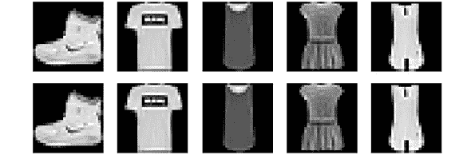
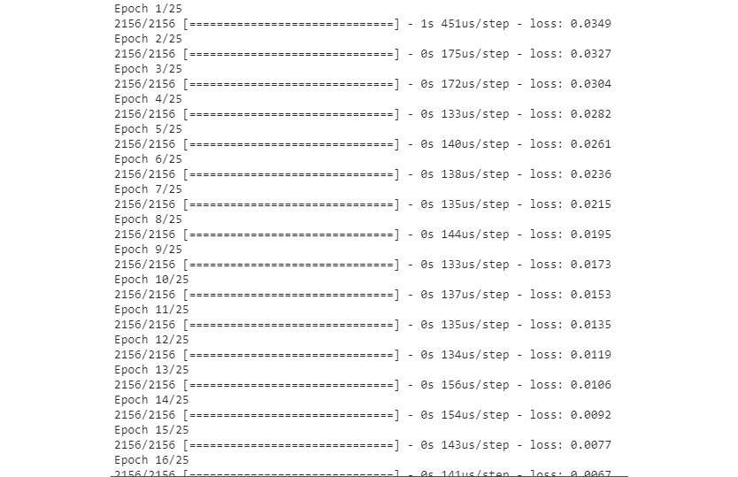
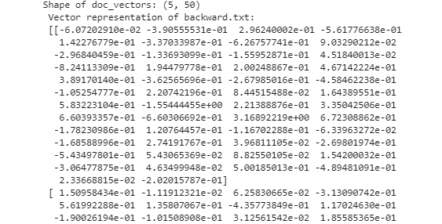
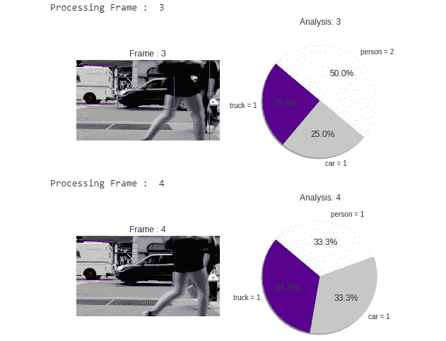

第一章:机器人基础
活动1:使用Python的里程计进行机器人定位
解决方案
from math import pi
def wheel_distance(diameter, encoder, encoder_time, wheel, movement_time):
time = movement_time / encoder_time
wheel_encoder = wheel * time
wheel_distance = (wheel_encoder * diameter * pi) / encoder
return wheel_distance
from math import cos,sin
def final_position(initial_pos,wheel_axis,angle):
final_x=initial_pos[0]+(wheel_axis*cos(angle))
final_y=initial_pos[1]+(wheel_axis*sin(angle))
final_angle=initial_pos[2]+angle
return(final_x,final_y,final_angle)
def position(diameter,base,encoder,encoder_time,left,right,initial_pos,movement_time):
#First step: Wheels completed distance
left_wheel=wheel_distance(diameter,encoder,encoder_time,left,movement_time)
right_wheel=wheel_distance(diameter,encoder,encoder_time,right,movement_time)
#Second step: Wheel's central axis completed distance
wheel_axis=(left_wheel+right_wheel)/2
#Third step: Robot's rotation angle
angle=(right_wheel-left_wheel)/base
#Final step: Final position calculus
final_pos=final_position(initial_pos,wheel_axis,angle)
returnfinal_pos
position(10,80,76,5,600,900,(0,0,0),5)
注意:
为了进一步观察，您可以将轮子的直径更改为15厘米，并检查输出中的差异。同样，您可以更改其他输入值并检查输出中的差异。
第二章:计算机视觉导论
活动2:从《时尚MNIST》的数据中对10种服装进行分类
解决方案
- 打开你的Google Colab界面。
- 为书创建一个文件夹，从GitHub下载
Dataset文件夹，上传到文件夹。 - Import the drive and mount it as follows:
from google.colab import drive drive.mount('/content/drive')一旦你第一次安装了你的硬盘，你就必须通过点击谷歌给出的网址并按下键盘上的回车键来输入授权码:

图2.38:显示Google Colab授权步骤的图像
- 现在您已经安装了驱动器，您需要设置目录的路径:
cd /content/drive/My Drive/C13550/Lesson02/Activity02/
- Load the dataset and show five samples:
from keras.datasets import fashion_mnist (x_train, y_train), (x_test, y_test) = fashion_mnist.load_data()
输出如下所示:
图2.39:加载包含五个样本的数据集
import random from sklearn import metrics from sklearn.utils import shuffle random.seed(42) from matplotlib import pyplot as plt for idx in range(5): rnd_index = random.randint(0, 59999) plt.subplot(1,5,idx+1),plt.imshow(x_train[idx],'gray') plt.xticks([]),plt.yticks([]) plt.show()图2.40:来自时尚MNIST数据集的图像样本
- 数据预处理:
import numpy as np from keras import utils as np_utils x_train = (x_train.astype(np.float32))/255.0 x_test = (x_test.astype(np.float32))/255.0 x_train = x_train.reshape(x_train.shape[0], 28, 28, 1) x_test = x_test.reshape(x_test.shape[0], 28, 28, 1) y_train = np_utils.to_categorical(y_train, 10) y_test = np_utils.to_categorical(y_test, 10) input_shape = x_train.shape[1:]
- Build the architecture of the neural network using
Denselayers:from keras.callbacks import EarlyStopping, ModelCheckpoint, ReduceLROnPlateau from keras.layers import Input, Dense, Dropout, Flatten from keras.preprocessing.image import ImageDataGenerator from keras.layers import Conv2D, MaxPooling2D, Activation, BatchNormalization from keras.models import Sequential, Model from keras.optimizers import Adam, Adadelta def DenseNN(inputh_shape): model = Sequential() model.add(Dense(128, input_shape=input_shape)) model.add(BatchNormalization()) model.add(Activation('relu')) model.add(Dropout(0.2)) model.add(Dense(128)) model.add(BatchNormalization()) model.add(Activation('relu')) model.add(Dropout(0.2)) model.add(Dense(64)) model.add(BatchNormalization()) model.add(Activation('relu')) model.add(Dropout(0.2)) model.add(Flatten()) model.add(Dense(64)) model.add(BatchNormalization()) model.add(Activation('relu')) model.add(Dropout(0.2)) model.add(Dense(10, activation="softmax")) return model model = DenseNN(input_shape)注意:
此活动的完整代码文件可以在GitHub的Lesson02 | Activity02文件夹中找到。
- Compile and train the model:
optimizer = Adadelta() model.compile(loss='categorical_crossentropy', optimizer=optimizer, metrics=['accuracy']) ckpt = ModelCheckpoint('model.h5', save_best_only=True,monitor='val_loss', mode='min', save_weights_only=False) model.fit(x_train, y_train, batch_size=128, epochs=20, verbose=1, validation_data=(x_test, y_test), callbacks=[ckpt])得到的精度为 88.72% 。这个问题更难解决，所以这就是为什么我们比上次练习的准确度要低。
- Make the predictions:
import cv2 images = ['ankle-boot.jpg', 'bag.jpg', 'trousers.jpg', 't-shirt.jpg'] for number in range(len(images)): imgLoaded = cv2.imread('Dataset/testing/%s'%(images[number]),0) img = cv2.resize(imgLoaded, (28, 28)) img = np.invert(img) cv2.imwrite('test.jpg',img) img = (img.astype(np.float32))/255.0 img = img.reshape(1, 28, 28, 1) plt.subplot(1,5,number+1),plt.imshow(imgLoaded,'gray') plt.title(np.argmax(model.predict(img)[0])) plt.xticks([]),plt.yticks([]) plt.show()输出将如下所示:

图2.41:使用神经网络预测服装
它对包和t恤衫进行了正确的分类，但没有对靴子和裤子进行分类。这些样本与它被训练的样本非常不同。
第三章:自然语言处理的基础
活动3:处理语料库
解决方案
- 导入
sklearnTfidfVectorizer和TruncatedSVD方法:from sklearn.feature_extraction.text import TfidfVectorizer from sklearn.decomposition import TruncatedSVD
- 加载语料库:
docs = [] ndocs = ["doc1", "doc2", "doc3"] for n in ndocs: aux = open("dataset/"+ n +".txt", "r", encoding="utf8") docs.append(aux.read()) - 有了
spaCy，我们来添加一些新的停用词，对语料库进行标记化，去掉停用词。没有这些单词的新语料库将被存储在一个新变量中:import spacy import en_core_web_sm from spacy.lang.en.stop_words import STOP_WORDS nlp = en_core_web_sm.load() nlp.vocab["\n\n"].is_stop = True nlp.vocab["\n"].is_stop = True nlp.vocab["the"].is_stop = True nlp.vocab["The"].is_stop = True newD = [] for d, i in zip(docs, range(len(docs))): doc = nlp(d) tokens = [token.text for token in doc if not token.is_stop and not token.is_punct] newD.append(' '.join(tokens)) - 创建TF-IDF矩阵。我要添加一些参数来改善结果:
vectorizer = TfidfVectorizer(use_idf=True, ngram_range=(1,2), smooth_idf=True, max_df=0.5) X = vectorizer.fit_transform(newD)
- 执行LSA算法:
lsa = TruncatedSVD(n_components=100,algorithm='randomized',n_iter=10,random_state=0) lsa.fit_transform(X)
- With pandas, we are shown a sorted
DataFramewith the weights of the terms of each concept and the name of each feature:import pandas as pd import numpy as np dic1 = {"Terms": terms, "Components": lsa.components_[0]} dic2 = {"Terms": terms, "Components": lsa.components_[1]} dic3 = {"Terms": terms, "Components": lsa.components_[2]} f1 = pd.DataFrame(dic1) f2 = pd.DataFrame(dic2) f3 = pd.DataFrame(dic3) f1.sort_values(by=['Components'], ascending=False) f2.sort_values(by=['Components'], ascending=False) f3.sort_values(by=['Components'], ascending=False)输出如下所示:
图3.26:概念中最相关单词的输出示例(f1)
注意:
如果关键词和你的不一样，不要担心，如果关键词代表一个概念，它是一个有效的结果。
第四章:具有NLP的神经网络
活动4:预测序列中的下一个字符
解决方案
- 导入解决活动所需的库:
import tensorflow as tf from keras.models import Sequential from keras.layers import LSTM, Dense, Activation, LeakyReLU import numpy as np
- 定义字符序列并乘以100:
char_seq = 'qwertyuiopasdfghjklñzxcvbnm' * 100 char_seq = list(char_seq)
- 创建一个
char2id字典，将每个字符与一个整数关联起来:char2id = dict([(char, idx) for idx, char in enumerate(set(char_seq))])
- 将字符的句子划分为时间序列。时间序列的最大长度将是五，所以我们将有五个字符的向量。此外，我们将创建即将到来的向量。y_labels变量是我们词汇的大小。我们稍后将使用这个变量:
maxlen = 5 sequences = [] next_char = [] for i in range(0,len(char_seq)-maxlen): sequences.append(char_seq[i:i+maxlen]) next_char.append(char_seq[i+maxlen]) y_labels = len(char2id) print("5 first sequences: {}".format(sequences[:5])) print("5 first next characters: {}".format(next_char[:5])) print("Total sequences: {}".format(len(sequences))) print("Total output labels: {}".format(y_labels)) - 到目前为止，我们有了sequences变量，它是一个数组的数组，包含时间序列的字符。char是一个包含后续字符的数组。现在，我们需要对这些向量进行编码，所以让我们定义一个方法，使用char2id:
def one_hot_encoder(seq, ids): encoded_seq = np.zeros([len(seq),len(ids)]) for i,s in enumerate(seq): encoded_seq[i][ids[s]] = 1 return encoded_seq
的信息对一个字符数组进行编码 - 将变量编码成独热向量。这个的形状是x = (2695，5，27)，y = (2695，27):
x = np.array([one_hot_encoder(item, char2id) for item in sequences]) y = np.array(one_hot_encoder(next_char, char2id)) x = x.astype(np.int32) y = y.astype(np.int32) print("Shape of x: {}".format(x.shape)) print("Shape of y: {}".format(y.shape))图4.35:编码成OneHotVectors的变量
- 将数据分成训练集和测试集。为此，我们将使用sklearn的
train_test_split方法:from sklearn.model_selection import train_test_split x_train, x_test, y_train, y_test = train_test_split(x, y, test_size=0.2, shuffle=False) print('x_train shape: {}'.format(x_train.shape)) print('y_train shape: {}'.format(y_train.shape)) print('x_test shape: {}'.format(x_test.shape)) print('y_test shape: {}'.format(y_test.shape))图4.36:将数据拆分为训练集和测试集
- With the data ready to be inserted in the neural network, create a Sequential model with two layers:
第一层:有八个神经元的LSTM(激活是tanh)。input_shape是序列的最大长度和词汇表的大小。因此，由于我们数据的形状，我们不需要重塑任何东西。
第二层:密集，有27个神经元。这就是我们成功完成活动的方式。使用LeakyRelu激活会给你一个好成绩。但是为什么呢？我们的输出有很多零，所以网络可能会失败，只返回一个零向量。使用LeakyRelu可以防止此问题:
model = Sequential() model.add(LSTM(8,input_shape=(maxlen,y_labels))) model.add(Dense(y_labels)) model.add(LeakyReLU(alpha=.01)) model.compile(loss='mse', optimizer='rmsprop')
- 训练模型。我们使用的batch_size是32，我们有25个历元:
history = model.fit(x_train, y_train, batch_size=32, epochs=25, verbose=1)
图4.37:batch _ size为32和25个历元的训练
- 计算你的模型的误差。
print('MSE: {:.5f}'.format(model.evaluate(x_test, y_test)))图4.38:模型中显示的错误
- 预测测试数据，查看平均命中率。有了这个模型，你会获得平均90%以上的:
prediction = model.predict(x_test) errors = 0 for pr, res in zip(prediction, y_test): if not np.array_equal(np.around(pr),res): errors+=1 print("Errors: {}".format(errors)) print("Hits: {}".format(len(prediction) - errors)) print("Hit average: {}".format((len(prediction) - errors)/len(prediction)))图4.39:预测测试数据
- 为了结束这个活动，我们需要创建一个接受字符序列并返回下一个预测值的函数。为了解码模型的预测，我们首先编写一个解码方法。这种方法只在预测中搜索较高的值，并在char2id字典中取关键字符。
def decode(vec): val = np.argmax(vec) return list(char2id.keys())[list(char2id.values()).index(val)]
- 创建一个方法来预测给定句子中的下一个字符:
def pred_seq(seq): seq = list(seq) x = one_hot_encoder(seq,char2id) x = np.expand_dims(x, axis=0) prediction = model.predict(x, verbose=0) return decode(list(prediction[0]))
- 最后，引入序列“tyuio”来预测即将出现的字符。它将返回‘p’:
pred_seq('tyuio')
图4.40:预测序列的最终输出
恭喜你！您已经完成了活动。您可以预测输出时间序列的值。这在金融学中也是非常重要的，也就是在预测未来价格或者股票走势的时候。
你可以改变数据，预测你想要什么。如果您添加一个语言学语料库，您将从您自己的RNN语言模型中生成文本。因此，我们未来的对话代理可以生成诗歌或新闻文本。
第五章:用于计算机视觉的卷积神经网络
活动5:利用数据扩充对花卉图像进行正确分类
解决方案
- 打开你的Google Colab界面。
注:
T2】 - To output some samples from the dataset:
import random random.seed(42) from matplotlib import pyplot as plt import cv2 for idx in range(5): rnd_index = random.randint(0, 4000) plt.subplot(1,5,idx+1),plt.imshow(cv2.cvtColor(X[rnd_index],cv2.COLOR_BGR2RGB)) plt.xticks([]),plt.yticks([]) plt.savefig("flowers_samples.jpg", bbox_inches='tight') plt.show()输出如下所示:

图5.23:数据集中的样本
- 现在，我们将标准化并执行一键编码:
from keras import utils as np_utils X = (X.astype(np.float32))/255.0 y = np_utils.to_categorical(y, len(classes)) print(X.shape) print(y.shape)
- 拆分训练集和测试集:
from sklearn.model_selection import train_test_split x_train, x_test, y_train, y_test = train_test_split(X, y, test_size=0.2) input_shape = x_train.shape[1:] print(x_train.shape) print(y_train.shape) print(x_test.shape) print(y_test.shape) print(input_shape)
- 导入库并构建CNN:
from keras.models import Sequential from keras.callbacks import ModelCheckpoint from keras.layers import Input, Dense, Dropout, Flatten from keras.layers import Conv2D, Activation, BatchNormalization def CNN(input_shape): model = Sequential() model.add(Conv2D(32, kernel_size=(5, 5), padding='same', strides=(2,2), input_shape=input_shape)) model.add(Activation('relu')) model.add(BatchNormalization()) model.add(Dropout(0.2)) model.add(Conv2D(64, kernel_size=(3, 3), padding='same', strides=(2,2))) model.add(Activation('relu')) model.add(BatchNormalization()) model.add(Dropout(0.2)) model.add(Conv2D(128, kernel_size=(3, 3), padding='same', strides=(2,2))) model.add(Activation('relu')) model.add(BatchNormalization()) model.add(Dropout(0.2)) model.add(Conv2D(256, kernel_size=(3, 3), padding='same', strides=(2,2))) model.add(Activation('relu')) model.add(BatchNormalization()) model.add(Dropout(0.2)) model.add(Flatten()) model.add(Dense(512)) model.add(Activation('relu')) model.add(BatchNormalization()) model.add(Dropout(0.5)) model.add(Dense(5, activation = "softmax")) return model - 声明ImageDataGenerator:
from keras.preprocessing.image import ImageDataGenerator datagen = ImageDataGenerator( rotation_range=10, zoom_range = 0.2, width_shift_range=0.2, height_shift_range=0.2, shear_range=0.1, horizontal_flip=True )
- 我们现在将训练模型:
datagen.fit(x_train) model = CNN(input_shape) model.compile(loss='categorical_crossentropy', optimizer='Adadelta', metrics=['accuracy']) ckpt = ModelCheckpoint('Models/model_flowers.h5', save_best_only=True,monitor='val_loss', mode='min', save_weights_only=False) //{…}##the detailed code can be found on Github## model.fit_generator(datagen.flow(x_train, y_train, batch_size=32), epochs=200, validation_data=(x_test, y_test), callbacks=[ckpt], steps_per_epoch=len(x_train) // 32, workers=4) - 之后，我们将评估模型:
from sklearn import metrics model.load_weights('Models/model_flowers.h5') y_pred = model.predict(x_test, batch_size=32, verbose=0) y_pred = np.argmax(y_pred, axis=1) y_test_aux = y_test.copy() y_test_pred = list() for i in y_test_aux: y_test_pred.append(np.argmax(i)) //{…} ##the detailed code can be found on Github## print (y_pred) # Evaluate the prediction accuracy = metrics.accuracy_score(y_test_pred, y_pred) print('Acc: %.4f' % accuracy) - 达到的精度为 91.68% 。
- Try the model with unseen data:
classes = ['daisy','dandelion','rose','sunflower','tulip'] images = ['sunflower.jpg','daisy.jpg','rose.jpg','dandelion.jpg','tulip .jpg'] model.load_weights('Models/model_flowers.h5') for number in range(len(images)): imgLoaded = cv2.imread('Dataset/testing/%s'%(images[number])) img = cv2.resize(imgLoaded, (150, 150)) img = (img.astype(np.float32))/255.0 img = img.reshape(1, 150, 150, 3) plt.subplot(1,5,number+1),plt.imshow(cv2.cvtColor(imgLoaded,cv2.COLOR_BGR2RGB)) plt.title(np.argmax(model.predict(img)[0])) plt.xticks([]),plt.yticks([]) plt.show()输出将如下所示:
图5.24:活动05的玫瑰预测结果
注意:
这项活动的详细代码可以在GitHub-https://GitHub . com/packt publishing/Artificial-Vision-and-Language-Processing-for-Robotics/blob/master/lesson 05/activity 05/activity 05 . ipynb上找到
第六章:机器人操作系统
活动6:模拟器和传感器
解决方案
- 我们从创建包和文件开始:
cd ~/catkin_ws/src catkin_create_pkg activity1 rospy sensor_msgs cd activity1 mkdir scripts cd scripts touch observer.py touch movement.py chmod +x observer.py chmod +x movement.py
- This is the implementation of the image obtainer node:
注意:
#!/usr/bin/env python import rospy from sensor_msgs.msg import Image import cv2 from cv_bridge import CvBridge class Observer: bridge = CvBridge() counter = 0 def callback(self, data): if self.counter == 20: cv_image = self.bridge.imgmsg_to_cv2(data, "bgr8") cv2.imshow('Image',cv_image) cv2.waitKey(1000) cv2.destroyAllWindows() self.counter = 0 else: self.counter += 1 def observe(self): rospy.Subscriber('/camera/rgb/image_raw', Image, self.callback) rospy.init_node('observer', anonymous=True) rospy.spin() if __name__ == '__main__': obs = Observer() obs.observe()可以看到，这个节点与练习21 、发布者和订阅者中的节点非常相似。唯一的区别是:
- A counter is used for showing only one image of twenty received.
我们输入
1000 (ms)作为Key()参数，这样每幅图像显示一秒钟。这是运动节点的实现:
#!/usr/bin/env python import rospy from geometry_msgs.msg import Twist def move(): pub = rospy.Publisher('/mobile_base/commands/velocity', Twist, queue_size=1) rospy.init_node('movement', anonymous=True) move = Twist() move.angular.z = 0.5 rate = rospy.Rate(10) while not rospy.is_shutdown(): pub.publish(move) rate.sleep() if __name__ == '__main__': try: move() except rospy.ROSInterruptException: pass - 为了执行文件，我们将执行这里提到的代码。
注:
T3】 - Run both nodes and check the system functioning. You should see the robot turning on itself while images of what it sees are shown. This is a sequence of the execution:
输出将如下所示:

图6.10:活动节点执行的第一个序列
图6.11:活动节点执行的第二个序列
图6.12:活动节点执行的第三个序列
注意:
输出看起来类似，但不完全像图6.10、6.11和6.12中提到的那样。
恭喜你！您已经完成了该活动，最后，您将得到如图6.8、6.9和6.10所示的输出。通过成功完成本练习，您已经能够实现和使用节点，这些节点允许您订阅将在虚拟环境中显示图像的摄像机。你还学会了让一个机器人自己旋转，让你观看这些图像。
第七章:建立一个基于文本的对话系统(聊天机器人)
活动7:创建一个对话代理来控制机器人
解决方案
- 打开你的Google Colab界面。
- 为这本书创建一个文件夹，从Github下载
utils、responses、training文件夹，上传到文件夹中。 - Import drive and mount it as follows:
from google.colab import drive drive.mount('/content/drive')注意
每次使用新的collaborator时，将驱动器安装到所需的文件夹中。
- 一旦你第一次安装了你的驱动器，你将需要通过点击谷歌提到的URL并按下键盘上的回车键来输入提到的授权码:
图7.28:显示谷歌Colab授权步骤的图像
- Now that you have mounted the drive, you need to set the path of the directory.
cd /content/drive/My Drive/C13550/Lesson07/Activity01
注意:
根据您在Google Drive上的文件夹设置，第5步中提到的路径可能会有所变化。路径将始终以cd /content/drive/My Drive/开头
- 导入聊天机器人_简介文件:
from chatbot_intro import *
- 定义手套型号:
filename = '../utils/glove.6B.50d.txt.word2vec' model = KeyedVectors.load_word2vec_format(filename, binary=False)
- 列出响应和训练句子文件:
intent_route = 'training/' response_route = 'responses/' intents = listdir(intent_route) responses = listdir(response_route) print("Documents: ", intents)
图7.29:意向文件列表
- 创建文档向量:
doc_vectors = np.empty((0,50), dtype='f') for i in intents: with open(intent_route + i) as f: sentences = f.readlines() sentences = [x.strip() for x in sentences] sentences = pre_processing(sentences) doc_vectors= np.append(doc_vectors,doc_vector(sentences,model),axis=0) print("Shape of doc_vectors:",doc_vectors.shape) print(" Vector representation of backward.txt:\n",doc_vectors)7.30:文档向量形状
- 预测意图:
user_sentence = "Look to the right" user_sentence = pre_processing([user_sentence]) user_vector = doc_vector(user_sentence,model).reshape(100,) intent = intents[select_intent(user_vector, doc_vectors)] intent
7.31:预测的意图
恭喜你！您完成了活动。如果你想训练手套模型以达到更好的效果，你可以添加更多的意图。通过用所有的代码创建一个函数，你在ROS中编程并开发了一个运动节点，你可以命令你的机器人做出运动并转身。
第8章:使用CNN引导机器人的物体识别
活动8:视频中的多目标检测和识别
解决方案
- 安装驱动器:
from google.colab import drive drive.mount('/content/drive') cd /content/drive/My Drive/C13550/Lesson08/ - 安装库:
pip3 install https://github.com/OlafenwaMoses/ImageAI/releases/download/2.0.2/imageai-2.0.2-py3-none-any.whl
- 导入库:
from imageai.Detection import VideoObjectDetection from matplotlib import pyplot as plt
- 申报型号:
video_detector = VideoObjectDetection() video_detector.setModelTypeAsYOLOv3() video_detector.setModelPath("Models/yolo.h5") video_detector.loadModel() - 声明回调方法:
color_index = {'bus': 'red', 'handbag': 'steelblue', 'giraffe': 'orange', 'spoon': 'gray', 'cup': 'yellow', 'chair': 'green', 'elephant': 'pink', 'truck': 'indigo', 'motorcycle': 'azure', 'refrigerator': 'gold', 'keyboard': 'violet', 'cow': 'magenta', 'mouse': 'crimson', 'sports ball': 'raspberry', 'horse': 'maroon', 'cat': 'orchid', 'boat': 'slateblue', 'hot dog': 'navy', 'apple': 'cobalt', 'parking meter': 'aliceblue', 'sandwich': 'skyblue', 'skis': 'deepskyblue', 'microwave': 'peacock', 'knife': 'cadetblue', 'baseball bat': 'cyan', 'oven': 'lightcyan', 'carrot': 'coldgrey', 'scissors': 'seagreen', 'sheep': 'deepgreen', 'toothbrush': 'cobaltgreen', 'fire hydrant': 'limegreen', 'remote': 'forestgreen', 'bicycle': 'olivedrab', 'toilet': 'ivory', 'tv': 'khaki', 'skateboard': 'palegoldenrod', 'train': 'cornsilk', 'zebra': 'wheat', 'tie': 'burlywood', 'orange': 'melon', 'bird': 'bisque', 'dining table': 'chocolate', 'hair drier': 'sandybrown', 'cell phone': 'sienna', 'sink': 'coral', 'bench': 'salmon', 'bottle': 'brown', 'car': 'silver', 'bowl': 'maroon', 'tennis racket': 'palevilotered', 'airplane': 'lavenderblush', 'pizza': 'hotpink', 'umbrella': 'deeppink', 'bear': 'plum', 'fork': 'purple', 'laptop': 'indigo', 'vase': 'mediumpurple', 'baseball glove': 'slateblue', 'traffic light': 'mediumblue', 'bed': 'navy', 'broccoli': 'royalblue', 'backpack': 'slategray', 'snowboard': 'skyblue', 'kite': 'cadetblue', 'teddy bear': 'peacock', 'clock': 'lightcyan', 'wine glass': 'teal', 'frisbee': 'aquamarine', 'donut': 'mincream', 'suitcase': 'seagreen', 'dog': 'springgreen', 'banana': 'emeraldgreen', 'person': 'honeydew', 'surfboard': 'palegreen', 'cake': 'sapgreen', 'book': 'lawngreen', 'potted plant': 'greenyellow', 'toaster': 'ivory', 'stop sign': 'beige', 'couch': 'khaki'} def forFrame(frame_number, output_array, output_count, returned_frame): plt.clf() this_colors = [] labels = [] sizes = [] counter = 0 for eachItem in output_count: counter += 1 labels.append(eachItem + " = " + str(output_count[eachItem])) sizes.append(output_count[eachItem]) this_colors.append(color_index[eachItem]) plt.subplot(1, 2, 1) plt.title("Frame : " + str(frame_number)) plt.axis("off") plt.imshow(returned_frame, interpolation="none") plt.subplot(1, 2, 2) plt.title("Analysis: " + str(frame_number)) plt.pie(sizes, labels=labels, colors=this_colors, shadow=True, startangle=140, autopct="%1.1f%%") plt.pause(0.01) - Run Matplotlib and the video detection process:
plt.show() video_detector.detectObjectsFromVideo(input_file_path="Dataset/videos/street.mp4", output_file_path="output-video" , frames_per_second=20, per_frame_function=forFrame, minimum_percentage_probability=30, return_detected_frame=True, log_progress=True)
输出如下图所示:

Figure 8.7: ImageAI视频对象检测输出
正如您所看到的，该模型或多或少地检测到了对象。现在你可以在你的第八章根目录下看到输出视频，里面有所有的物体检测。
注意:
在Dataset/videos文件夹中添加了一个附加视频—park.mp4。你可以使用刚才提到的步骤，也可以识别视频中的物体。
第九章:机器人的计算机视觉
活动9:机器人保安
解决方案
- 在您的柳絮工作区中创建一个新的包来包含集成节点。用这个命令包含正确的依赖项:
cd ~/catkin_ws/ source devel/setup.bash roscore cd src catkin_create_pkg activity1 rospy cv_bridge geometry_msgs image_transport sensor_msgs std_msgs
- 切换到包文件夹并创建一个新的
scripts目录。然后，创建Python文件并使其可执行:cd activity1 mkdir scripts cd scripts touch activity.py touch activity_sub.py chmod +x activity.py chmod +x activity_sub.py
- This is the implementation of the first node:
图书馆进口:
#!/usr/bin/env python import rospy import cv2 import sys import os from cv_bridge import CvBridge, CvBridgeError from sensor_msgs.msg import Image from std_msgs.msg import String sys.path.append(os.path.join(os.getcwd(), '/home/alvaro/Escritorio/tfg/darknet/python/')) import darknet as dn
注意
class Activity(): def __init__(self):节点、订户和网络初始化:
rospy.init_node('Activity', anonymous=True) self.bridge = CvBridge() self.image_sub = rospy.Subscriber("camera/rgb/image_raw", Image, self.imageCallback) self.pub = rospy.Publisher('yolo_topic', String, queue_size=10) self.imageToProcess = None cfgPath = "/home/alvaro/Escritorio/tfg/darknet/cfg/yolov3.cfg" weightsPath = "/home/alvaro/Escritorio/tfg/darknet/yolov3.weights" dataPath = "/home/alvaro/Escritorio/tfg/darknet/cfg/coco2.data" self.net = dn.load_net(cfgPath, weightsPath, 0) self.meta = dn.load_meta(dataPath) self.fileName = 'predict.jpg' self.rate = rospy.Rate(10)注意
def imageCallback(self, data): self.imageToProcess = self.bridge.imgmsg_to_cv2(data, "bgr8")节点的主要功能:
def run(self): print("The robot is recognizing objects") while not rospy.core.is_shutdown(): if(self.imageToProcess is not None): cv2.imwrite(self.fileName, self.imageToProcess)对图像进行预测的方法:
r = dn.detect(self.net, self.meta, self.fileName) objects = "" for obj in r: objects += obj[0] + " "发布预测:
self.pub.publish(objects) self.rate.sleep()程序条目:
if __name__ == '__main__': dn.set_gpu(0) node = Activity() try: node.run() except rospy.ROSInterruptException: pass - This is the implementation of the second node:
图书馆进口:
#!/usr/bin/env python import rospy from std_msgs.msg import String
类别定义:
class ActivitySub(): yolo_data = "" def __init__(self):节点初始化和订户定义:
rospy.init_node('ThiefDetector', anonymous=True) rospy.Subscriber("yolo_topic", String, self.callback)获取发布数据的回调函数:
def callback(self, data): self.yolo_data = data def run(self): while True:如果在数据中检测到人员，则启动警报:
if "person" in str(self.yolo_data): print("ALERT: THIEF DETECTED") break程序条目:
if __name__ == '__main__': node = ActivitySub() try: node.run() except rospy.ROSInterruptException: pass - 现在，您需要将目的地设置为脚本文件夹:
cd ../../ cd .. cd src/activity1/scripts/
- 执行movement.py文件:
touch movement.py chmod +x movement.py cd ~/catkin_ws source devel/setup.bash roslaunch turtlebot_gazebo turtlebot_world.launch
- 打开一个新的终端，执行命令得到输出:
cd ~/catkin_ws source devel/setup.bash rosrun activity1 activity.py cd ~/catkin_ws source devel/setup.bash rosrun activity1 activity_sub.py cd ~/catkin_ws source devel/setup.bash rosrun activity1 movement.py
- Run both nodes at the same time. This is an execution example:
露台情况:
图9.16:活动的示例情况
第一个节点输出:
图9.17:第一个活动节点输出
第二节点输出: